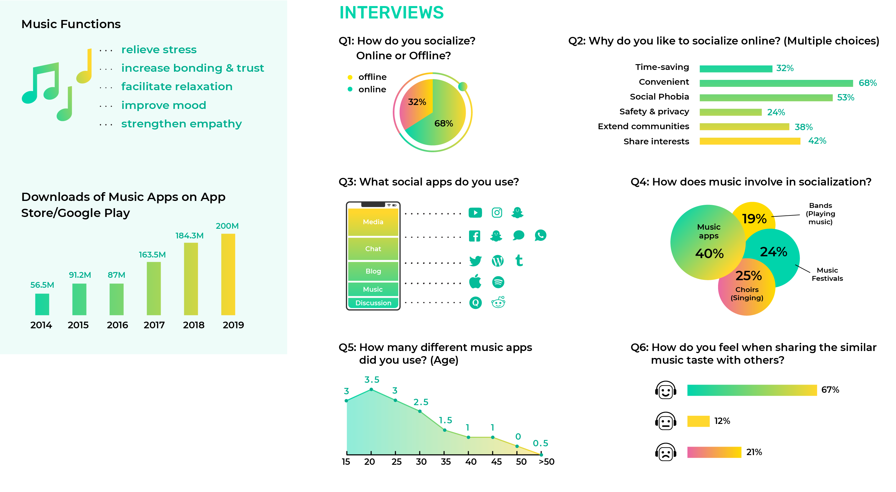
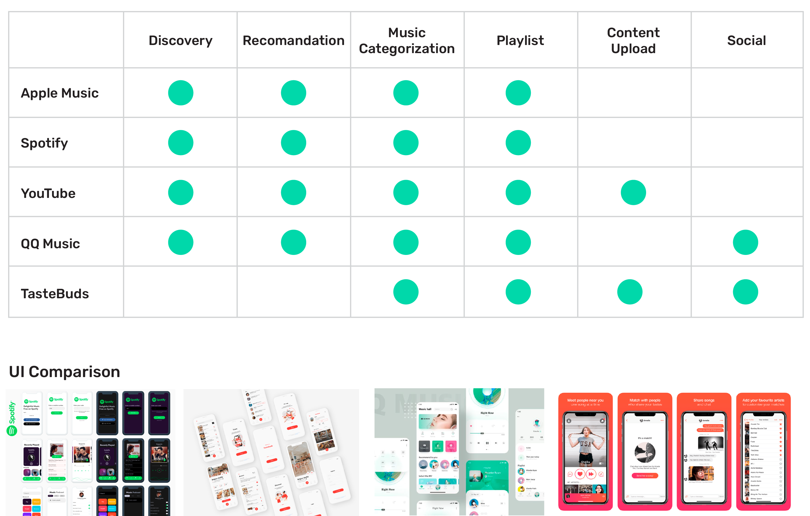
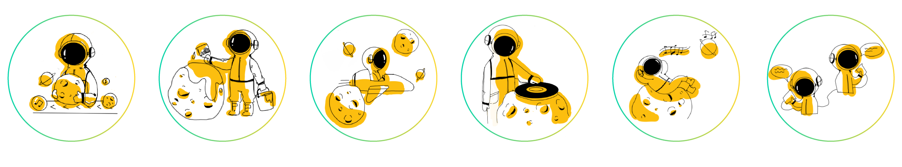

02Spacho
Role
App Design
Brief
Are you very self-conscious in everyday social situations? If you have been feeling this way, you may have a social anxiety disorder, which is the 3rd prevalent mental disorder in recent years. It involves anxiety around "being embarrassed, humiliated in social interactions", and meeting new people are serious triggers for anxieties even in non-anxious people.
Spacho is a social network built around music for people with a social anxiety. It creates an unique and participatory space world, using shared musical tastes as icebreakers to build a connection with other users and the app. Users will be called “spaceman” and able to create their music planets and FMs. The focus of this project is to build a space from a safe distance and use the power of music to facilitate relaxation and bond people together for people who struggle to build relationships in real life.
Quantitative Research

Qualitative Research
Moodboard
Competitive Analysis
Persona

Storyboard
I will develop a music-based app that each user will be called “spaceman” and own a music planet. It will not only increase the interactivity between users but also between the user and the app in order to provide an interactive music experience.

Service Model
Sitemap+Wireframes

Visual Identities
The name “Spacho” comes from the words “space” and “echo.” The “space” suggests it will construct a music space. The“echo” defines a series of sounds caused by the reflection of sound waves back to the listener. So I use “echo” as a metaphor for the reflection of the music sharers’ tastes back to each spaceman.


Interfaces - Onboarding

Roam Service

FM Service & Chat Service

Setting Service
Posters
Airpod Packaging Design